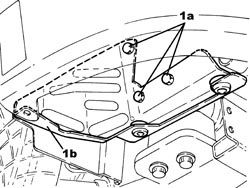

1048A13 AIR FILTER MOUNT R R
- Path
- Procedures > 10 ENGINE > 1048 ENGINE AIR SUPPLY CIRCUIT > 1048A VACUUM AIR CIRCUIT > 1048A13 AIR FILTER MOUNT R R
- Kind
- repair procedure (removal / refitting; the operation number is the code)
- Applies to
- engines: 1.9 JTS, 2.2 JTS; all production periods
- Interactive page
- https://sloeber94.github.io/elrnDB/alfa/159/en/#/939010513
Applies to: engines: 1.9 JTS, 2.2 JTS; all production periods
 Removing
Removing
 Refitting
Refitting- Position the vehicle on a lift.
Op. 1048A28 VACUUM AIR CIRCUIT RESONATOR PIPE - R+R
Op. 1048A14 AIR CLEANER FILTER ELEMENT - REPLACE.
Op. 1048A10 AIR FILTER ASSEMBLY - R.R.
1. Undo the bolts (1a) and remove the air filter mounting (1b).

Applies to: engines: 1.9 JTS, 2.2 JTS; all production periods
Refitting
Removing- Place the air filter mounting in its housing and secure it using the bolts.
Op. 1048A10 AIR FILTER ASSEMBLY - R.R.
Op. 1048A14 AIR CLEANER FILTER ELEMENT - REPLACE.
Op. 1048A28 VACUUM AIR CIRCUIT RESONATOR PIPE - R+R
- Remove the vehicle from the lift.